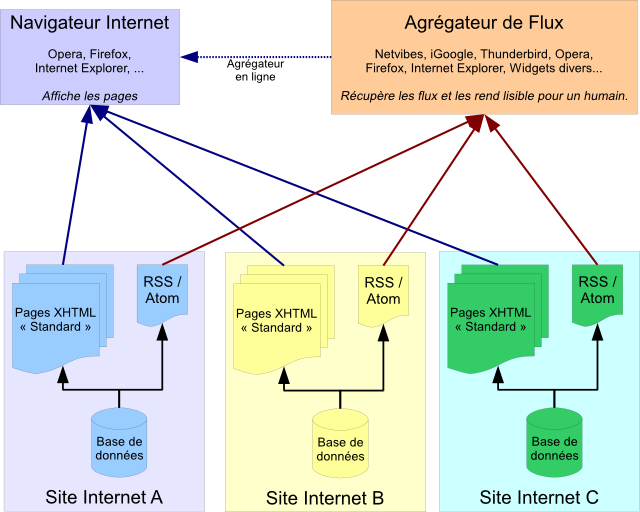
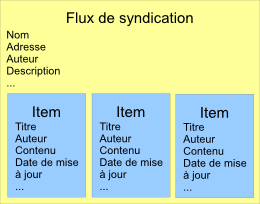
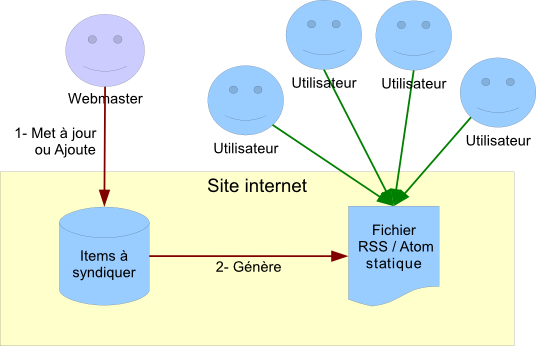

« Syndication de contenu »... Derrière ce terme abscons se cache la possibilité d'avoir, sur une même page web ou dans son client mail, quasiment en temps réel, les dernières news de vos sites Internet préférés : résultats sportifs, news du Site du Zéro, informations, actualités, ... Dans le langage courant, on utilise beaucoup le terme de « flux RSS » pour désigner ce service (mais comme nous allons le voir, ce n'est qu'un abus de langage).
Ce tutoriel s'adresse aux webmasters désireux de proposer un tel service à leurs internautes. Si vous cherchez juste à savoir ce qu'est la syndication de contenu, jetez toujours un œil à la partie 1, mais je n'irai pas bien loin.
Note : les parties spécifiques à Atom sont directement inspirées des spécifications sur le site officiel. Reportez-y vous en cas de doute, elles sont claires.
Avant toute chose, un petit rappel sur la syndication de contenu.
Le terme de syndication de contenu regroupe des réalités différentes et a une histoire assez chargée (le terme nous vient de l'industrie audiovisuelle) que je ne détaillerai pas ici. En gros, syndiquer du contenu, c'est proposer ledit contenu sous un format spécifique, afin que ce contenu puisse, au choix :
Être inséré dans un autre site internet,
Être affiché via un agrégateur de flux.
En pratique, les principes de syndication conviennent en fait à tout type de contenu régulièrement mis à jour :
Fils d'information : actualité générale, weblogs, résultats sportifs ;
Fils de discussion : forums, mailing-lists, commentaires de weblogs ;
Le contenu est proposé sous forme de flux (terme qui montre bien le côté dynamique de la chose) appelé « flux RSS », ou plus rarement « flux Atom », du nom des protocoles utilisés.
Principe de fonctionnement
Avec un petit schéma pour résumer :

Le concept est simple : plutôt que de devoir passer sur chacun des sites (A, B, C) pour savoir ce qu'il y a de nouveau, l'utilisateur s'abonne aux flux de ces trois sites. Chacun de ces flux s'affiche dans son agrégateur de flux ; et comme les flux sont mis à jour presque en temps réel, l'utilisateur sait très rapidement ce qu'il y a de nouveau sur les sites qu'il suit.
Les agrégateurs de flux
Évidemment, un agrégateur est indispensable pour lire les flux, sans quoi l'utilisateur ne verra qu'un gros fichier sans réelle signification. On en trouve deux principaux types :
Les sites internet
Beaucoup de sites internet proposent des fonctions très poussé d'intégration, d'agrégation et de tri de flux de syndications. On peut citer, par exemple, Netvibes ou iGoogle. L'avantage est qu'on peut accéder à sa collection de flux depuis n'importe quel outil connecté à internet. L'inconvénient est que comme les flux sont inclus dans une page web, on perds la mise à jour automatique : il faut passer sur la page de l'agrégateur pour savoir ce qu'il y a de nouveau. Bon, ça ne fait qu'une seule page à visiter, et la plupart des navigateurs ont une option de rafraîchissement automatique.
Les programmes
On trouve aussi des programmes permettant de lire les flux de syndication. En particulier, tous les navigateurs récents les prennent en charge, au moins de façon basique. Les clients mails aussi, prennent souvent en charge ces flux, avec plus ou moins de succès. Enfin, les plates-formes de widgets possèdent tous des lecteurs de flux de syndication. L'avantage principal est que la grande majorité de ces outils proposent des mises à jour périodiques ; on a donc le flux en temps quasi-réel. Le gros inconvénient est que les flux sont recensés sur une machine en particulier : si vous partez en vacances chez des amis, vous ne pourrez suivre vos flux facilement que si vous amenez votre ordinateur.
Avantages & Inconvénients de la syndication de contenu
Avantages
Gain de temps considérable pour le suivi de sites fréquemment mis à jour.
L'utilisateur va chercher l'information, à la demande.
Le diffuseur garde le contrôle sur l'information.
Il est quasiment impossible de spammer ou de se faire spammer avec les flux de syndication.
La technologie est portable : ordinateurs, PDA, téléphones, ...
Inconvénients
Le visiteur vient moins sur le site, ce qui peut entraîner un manque à gagner pour la publicité.
Un flux mal conçu peut être ruineux pour l'hébergeur en bande passante et temps de calcul.
Maintenant que vous savez ce qu'est un flux de syndication et à quoi il sert, nous allons voir comment en créer un.
Comment se présente un flux de syndication de contenu ?
Dans les formats les plus courants (ceux que nous allons voir, donc), un flux de syndication est un document XML avec un schéma bien particulier. De fait, pour comprendre la suite, vous avez besoin de maîtriser XML. Si vous avez un doute, allez lire le tuto à ce sujet.
Quel que soit le système utilisé, on peut trouver deux grandes parties dans un flux de syndication :
Les informations générales
Ce sont toute une série d'informations qui portent sur le flux en lui-même :
Son titre,
Son adresse sur Internet,
Sa description,
Son auteur,
Sa date de mise à jour,
etc.
Ces informations décrivent le flux en général ; grâce à elles, on sait d'où vient le flux, ce qu'il représente et de quand datent les informations qu'il contient.
Les items
C'est là la partie la plus intéressante du flux. Chaque flux contient une série d'éléments organisés de la même manière, chacun représentant un item, ou entrée du flux. Par exemple, si je fais un flux avec les news de mon site, chaque item sera une news. Chacun de ses items, lui-aussi, a un certain nombre d'informations :
Son nom, ou titre,
Sa description, ou contenu,
Son auteur,
Sa date de mise à jour,
etc.
Schéma d'un flux
Voici un schéma récapitulant la structure globale d'un flux.

Les protocoles utilisés
Il y a deux grands protocoles utilisés pour faire de la syndication de contenu : RSS et Atom. En règle général, on connaît très largement le nom du premier, et beaucoup moins le deuxième ; mais il faut savoir que par abus de langage, on utilise très souvent « flux RSS » pour parler d'un flux Atom. La raison est que l'utilisation de l'un ou l'autre est parfaitement transparente pour l'utilisateur, or RSS est plus ancien qu'Atom. Le nom est donc resté. Ces deux protocoles respectent le format de fichier décrit juste ci-dessus.
Dans le titre, tu nous parles d'Atom. Pourquoi ce choix ?
D'abord, un peu d'histoire. RSS existe depuis 1999 ; on pourrait donc penser que c'est un système fiable et mûr pour une utilisation généralisée sans se poser de questions. Or, il n'en est malheureusement rien. RSS a été développé assez anarchiquement, par deux équipes en parallèle. Du coup, on se retrouve avec plusieurs versions normalisées en concurrence, un format manquant de flexibilité, d'interopérabilité et ayant des manques certains. En 2003, des personnes commencèrent à penser à développer format « concurrent » qui serait :
Indépendant vis-à-vis des protagonistes (« 100% vendor neutral »)
Facile à mettre en œuvre (« implemented by everybody »)
Librement extensible par quiconque (« freely extensible by anybody »)
Défini clairement et complètement (« cleanly and thoroughly specified »)
Les spécifications de Atom 1.0 ont été fixées en 2005.
C'est ce format que j'ai choisi, pour ses avantages sur RSS sans réel inconvénient. En particulier, Atom est extensible, clairement défini (on peut trouver les spécifications ici) et permet des choses bien utiles, comme mettre du XHTML dans les descriptions.
Bon, et maintenant, je le fais comment mon flux Atom ?
Je vais décrire la structure détaillée d'un flux Atom dans la partie suivante. Pour le contenu, une requête bien ciblée sur les données que vous voulez syndiquer et une boucle pour défiler les résultats devraient suffire.
Mais avant de vous parler de la structure, il y a des pièges dans lesquels il ne faut surtout pas tomber.
Les pièges des flux de syndication
Premier piège : La syndication de choses non syndicables
Avant toute chose, vérifier que ce que vous comptez mettre dans votre flux est bien syndicable, et a quelque chose à y faire. En particulier, il est très difficile de gérer des droits d'accès fiables sur les flux de syndication.
Pensez aussi que vos données syndiquées sont accessibles par n'importe qui ; aussi, pas question de mettre un accès direct à des données sensibles. Vous pouvez par contre mettre, dans votre flux, des accès sécurisés (i.e. qui demandent une authentification) à vos données sensibles. Je pense notamment à une syndication sur un partage de fichiers : si vous mettez directement l'adresse des fichiers dans le flux sans protection, toute personne ayant le flux (donc à priori n'importe qui sur internet) pourra accéder à vos données.
Enfin, un flux Atom est fait pour gérer des données ordonnées dans le temps. Il serait vite problématique de vouloir l'utiliser, par exemple, pour faire des listes de fichiers, ou toute autre chose sans donnée temporelle.
Second piège : L'assassinat du serveur avec un flux de syndication
Ce piège-ci est plus vicieux.
Attention, « un grand nombre de requêtes » ne signifie pas que les requêtes vont être lourdes à traiter ; au contraire, elles seront très légères si vous gérez bien votre flux.
Réfléchissons un instant. Monsieur Dupont s'est abonné à votre flux Atom. Il le lit dans son client mail, et comme monsieur Dupont aime bien être au courant rapidement de ce qui se passe, il règle son client mail pour que le flux soit mis à jour tous les quarts d'heure. Il suit le flux 8 heures tous les jours, pendant qu'il est au boulot ; il vient donc chercher 8 * 4 = 32 fois votre flux tous les jours. Et si seulement 100 personnes font comme monsieur Dupont avec votre site ? Eh bien, c'est 3200 requêtes par jour, rien que pour votre flux de syndication.
Comme on peut le voir, ce type de service peut vite provoquer beaucoup de requêtes serveur ; aussi le flux de syndication devrait toujours être un fichier statique généré à chaque mise à jour des items syndiqués (normalement, les mises à jour des items sont beaucoup moins fréquentes que les récupérations du flux, ou alors c'est que vous avez un problème). Ceci est d'autant plus facile que comme le fichier du flux de syndication est le même pour tout le monde, on peut très facilement le générer et en stocker une version statique.
Un petit schéma récapitulatif :

Troisième piège : le flux sans fin (ou presque)
Bien, vous avez maintenant un superbe flux de syndication, géré avec un cache, et tout. Et puis, vous avez oublié un détail : vous mettez tous les items concernés dans le flux (par exemple, toutes les news depuis la création du site). Vous imaginez si le flux des news du Site du Zéro fonctionnait comme ça ? Là, il fait 56 Ko pour seulement les 10 dernières news (mais avec le texte complet), et il y a environ 850 news disponibles. Ça ferait un fichier de plus de 4 Mo à envoyer à chaque demande de flux ; et je ne parle même pas du temps de traitement d'un fichier pareil chez l'utilisateur !
En général, on trouve une dizaine d'items pour les flux mis à jours quelques fois par semaine, avec les textes complets ; et une quarantaine d'items pour les flux mis à jour plusieurs fois par jour, mais sans les textes complets cette fois.
Maintenant qu'on sait ce qu'il y a dans un flux de syndication en général, on peut continuer sur la création d'un flux Atom, en particulier !
Que faire de son flux ?
Savoir générer un flux, c'est bien. Mais savoir quoi en faire, c'est mieux. Heureusement, il extrêmement simple d'ajouter un flux Atom à votre site.
Il faut et il suffit d'ajouter une ligne de ce type dans votre fichier html, entre les balises <head> ... </head> :
<link
rel = "alternate"
type = "application/atom+xml"
title = "Nom de votre flux"
href = "http://votre.site/url/de/votre/flux"
/>
A quoi correspond tout ceci ?
<link/> est une balise décrivant un lien. Pas un lien hypertexte cliquable, mais un lien vers une ressource qui a un rapport avec la page.
rel = "alternate" précise que ce lien est une vue alternative du site.
type = "application/atom+xml" nous donne le type MIME de ressource liée. Ici c'est une application, plus précisément une application Atom au format XML.
title = "..." est le titre de votre flux. C'est important, car c'est lui qui va être affiché quand on va vouloir le choisir.
href = "..." correspond à l'URL de votre flux. Il est préférable de mettre une adresse absolue (avec l'adresse de votre site dedans, donc).
Comme vous le voyez, il n'y a pas de piège. La seule chose qui peut être surprenante est qu'on définit notre flux Atom comme étant une application, et pas un fichier texte. C'est logique, car personne n'est censé lire directement le flux, ce sont des données utilisées par des applications. En fait, la grande majorité des flux XML sont définis en tant que application/quelquechose+xml.
Avant de s'attaquer au flux, il faut savoir qu'Atom utilise un certain nombre de groupes de balises avec des règles bien précises, qui sont regroupées sous le nom de constructions. Ces constructions sont indispensables pour comprendre et utiliser la suite, c'est pourquoi nous allons commencer par elles.
Toutes ces constructions sont constituées d'une balise XML « racine », laquelle contient soit des attributs, soit d'autres balises XML.
La construction « catégorie »
Cette construction permet, comme son nom l'indique, de catégoriser un élément. Elle est constituée d'une balise category et de trois attributs.
Le nom
Il est définit par l'attribut obligatoireterm. C'est un terme court qui sert juste à identifier la catégorie.
Le système de catégorisation
Il est définit par l'attribut facultatif scheme. Cet attribut contient un URI qui identifie la manière dont fonctionne la catégorisation. Je ne pense pas que ce soit très utile pour des sites non-professionnels.
Le titre pour l'affichage
Il est définit par l'attribut facultatif label. C'est une version lisible par un humain du nom de la catégorie.
Exemple de catégorie
<category term = "MHL1" label = "Mapping Half-Life 1" />
La construction « texte »
Cette construction permet, comme son nom l'indique, de spécifier du texte, qui doit être lisible par un humain. Elle est constituée de l'une des balises title, summary, content, rights, de l'attribut type et du contenu de cette balise.
L'attribut type détermine comment est encodé le texte inclus dans la balise, et peut prendre l'une de ces trois valeurs :
text
html
xhtml
type = "text"
Cela signifie simplement que la balise contient juste du texte, sans aucune mise en forme.
type = "html"
Cela signifie simplement que la balise contient du texte au format HTML, mais dont les balises ont été « échappées », i.e. converties au format HTML. Un exemple pour que ce soit clair : je veux que mon titre affiche « Je suis en italique ». Le code HTML pour faire ça est :
Je suis en <em>italique</em>
Je convertis les chevrons en leur équivalent HTML, et je mets ça dans ma balise :
<title type = "html">Je suis en <em>italique</em></title>
type = "xhtml"
Cela signifie simplement que la balise contient du texte au format XHTML. Comme le XHTML est du XML, on peut le mettre directement, sans conversions ; par contre il faut mettre le contenu dans une balise div indiquant l'espace de nom du XHTML, ce qui nous donne (en reprenant l'exemple précédent) :
<title type = "xhtml">
<div xmlns="http://www.w3.org/1999/xhtml">
Je suis en <em>italique</em>
</div>
</title>
La construction « contenu »
Cette construction est une extension de la construction « texte », qui ne s'applique qu'à la balise content. En lieu et place de l'attribut type, on peut définir un attribut src qui contient l'adresse du contenu. Dans ce cas, ce dernier n'est pas inclus dans la balise, il est juste lié.
La construction « contenu » possède d'autres subtilités, voyez la spécification pour leurs détails.
La construction « lien »
Eh oui, avec Atom, un lien peut être quelque chose de complexe qui nécessite une construction ! Le lien est constitué par la balise link, l'attribut obligatoire href, et les cinq attributs optionnels rel, type, hreflang, title et length.
L'adresse du contenu lié
Elle est définie par l'attribut obligatoirehref, et contient l'adresse du contenu lié.
La relation du lien avec le flux
Elle est définie par l'attribut facultatif rel. Cet attribut peut prendre les valeurs suivantes :
alternate(valeur par défaut si non spécifié) : Le contenu lié est une autre représentation du flux (page web, ...)
enclosure : Le contenu lié peut être lourd et peut nécessiter des logiciels spécifiques (flux audio, vidéo, ...)
related : Le contenu lié est un document en rapport avec l'entrée ou le flux.
self : Le lien pointe vers le flux lui-même.
via : Le lien est la source de l'information donnée dans l'entrée.
Le type de contenu lié
Il est définit par l'attribut facultatif type.
La langue du contenu lié
Elle est définie par l'attribut facultatif hreflang.
Le titre du contenu lié
Il est définit par l'attribut facultatif title, et doit être lisible par un humain.
La taille du contenu lié
Elle est définie par l'attribut facultatif length, en octets.
Exemple de lien
<link href = "http://www.atomenabled.org/developers/syndication/" title = "Source de ce tuto" rel = "via" type = "text/html" hreflang = "en" length = "21770"/>
La construction « personne »
Dans Atom, on peut avoir besoin de définir une personne. Cela se fait grâce a la balise author ou grâce à la balise contributor. Il faut y inclure la balise obligatoire name ; et on peut y adjoindre les balises uri et email.
Le nom
Le nom de la personne est donné par la balise obligatoirename. Ce nom doit être lisible par un humain, ce qui paraît logique, vu qu'il s'agit du nom d'une personne ou d'un pseudo (encore que, parfois on vois de ces noms ou pseudos...)
Le site web
On peut donner le site web de la personne via la balise facultative uri. Cette balise contient simplement l'adresse du site.
L'adresse mail
On peut donner l'adresse mail de la personne via la balise facultative email. Cette balise contient simplement l'adresse email.
Nous venons de le voir, un flux Atom contient des informations sur le flux en lui-même, et un certain nombre d'entrées. Nous allons commencer par les informations générales du flux.
Comme dans tous les formats XML ou presque, Atom précise des balises obligatoires, des balises recommandées des balises facultatives. Nous allons commencer par découvrir les balises obligatoires.
Les informations obligatoires
Commençons par créer un fichier XML contenant le minimum : la balise d'en-tête XML, et le nœud racine contenant l'URL du namespace d'Atom. Pour Atom, ce nœud s'appelle feed et le namespace est http://www.w3.org/2005/Atom, ce qui nous donne :
Atom requiert un identifiant, indiqué par une balise id. Cet identifiant sert à repérer de manière unique et durable votre flux Atom, sur Internet. Il doit donc avoir deux particularités :
Être unique sur Internet.
Ne jamais, jamais changer (même si vous changez votre site, et donc votre flux, de serveur).
On a deux solutions principales pour obtenir un identifiant valable :
Si vous avez un serveur dont le nom ne changera pas à long terme, mettez directement l'adresse URL de votre flux Atom.
Sinon, vous pouvez utiliser un UUID, que l'on notera de la façon suivante dans la balise : urn:uuid:[L'UUID de votre flux].
Le titre
Atom requiert un titre, indiqué par une balise title. Ce titre doit être lisible par un être humain, et il est interdit de mettre un titre vide.
La date de mise à jour
Atom requiert une date de mise à jour, indiquée par une balise updated.
Or, cette norme est tout sauf naturelle, par exemple, au moment où j'écris ces lignes, nous sommes le 30 mai 2008 à 17h 15m 35s, heure de Paris. En RCF 3339 / ISO 8601, ça donne : « 2008-05-30T17:15:35+02:00 » Les différents champs sont : [année sur 4 chiffres]-[mois]-[jour]T[heure]:[minutes]:[secondes][décalage horaire] « T » est simplement le séparateur entre la date est l'heure. Le décalage horaire est indiqué de la façon suivante : [+-][heures]:[minutes], ou tout simplement « Z » si l'heure est indiquée GMT (exemple : 2003-12-13T18:30:02Z, le 13 décembre 2003 à 18:30:02 GMT).
<?php date('c'); ?> renvoie la date du jour au format RCF 3339 / ISO 8601, <?php date('c', $timestamp); ?> renvoie la date du timestamp au format RCF 3339 / ISO 8601.
Exemple de flux avec les informations générales minimales
<?xml version="1.0" encoding="utf-8"?>
<feed xmlns="http://www.w3.org/2005/Atom">
<title>Le Site du Zér0 : l'actualité des tutoriels, de la communauté et du Web en général !</title>
<updated>2008-05-29T13:14:57+02:00</updated>
<id>http://www.siteduzero.com/</id>
</feed>
Les informations recommandées
Le ou les liens
Atom recommande d'indiquer au moins une page web correspondant au flux.
Un flux Atom devrait contenir un lien pointant vers le flux lui-même :
<link rel="self" href="[adresse du flux]" />
Le ou les auteurs
Atom recommande d'indiquer le ou les auteurs du flux, via une construction « personnage ». Dans ce cas, cette construction doit utiliser la balise author. Un flux Atom doit contenir au moins un auteur global si aucune entrée ne contient d'auteur.
Les informations optionnelles
La ou les catégories
Atom gère les catégories directement en interne ; on peut lui donner une ou plusieurs catégories. Ces catégories sont des constructions « catégorie ».
Le ou les contributeurs
On peut définir des contributeurs au flux. Ils fonctionnent exactement comme les auteurs, sauf que la balise s'appelle contributor au lieu de author. Là, vous vous demandez sans doute quelle est la différence entre un auteur et un contributeur ? Eh bien je n'en sais rien, et Atom ne précise rien à ce sujet. L'explication la plus logique serait que l'auteur est le principal responsable de la contribution, et les contributeurs ses « assistants ».
Le générateur
Avec Atom, on peut préciser le logiciel qui a permit de générer le flux, directement dans une balise generator :
<generator>GPLE :: Générateur Pour L'Exemple</generator>
On peut ajouter l'adresse du site dudit générateur via un paramètre « generator », et un numéro de version via un paramètre « version » :
<generator uri = "http://www.gple.ex" version = "7.64">GPLE :: Générateur Pour L'Exemple</generator>
Ces deux paramètres sont optionnels.
L'icône
On peut spécifier une icône pour son flux Atom, en mettant son adresse dans une balise icon. Une icône devrait être carrée.
Le logo
On peut spécifier un logo pour son flux Atom, en mettant son adresse dans une balise logo. Un logo devrait être deux fois plus large que haut.
Droits, copyrights
On peut préciser les droits et copyrights du flux et de son contenu, grâce à une balise rights. Cette balise est une construction « texte ».
Le sous-titre
On peut donner un sous-titre à son flux Atom, via la balise subtitle. Ici aussi, c'est une construction « texte ».
Maintenant que nous savons quoi mettre dans les informations générales, nous allons nous attaquer aux entrées du flux.
L'entrée en elle-même
Chaque entrée est délimitée par une paire de balises entry. Atom ne précise pas de nombre minimum d'entrées dans votre flux, mais il va de soit qu'un flux vide a un intérêt assez faible...
Voici ce qu'on doit, ce qu'on devrait, et ce qu'on peut trouver dans chacune de ces entrées :
Les informations obligatoires
L'identifiant
Atom requiert un identifiant, indiqué par une balise id. Cet identifiant suit les mêmes règles que celui des informations générales, mais doit désigner de manière unique l'entrée du flux sur Internet. Exception : on peut avoir deux identifiants identiques s'ils se rapportent à la même entrée, mais ajoutée deux fois dans le flux à deux moments différents.
Une bonne idée est de garder le même genre de construction que pour l'identifiant général, ne serait-ce que pour une question de cohérence.
Le titre
Atom requiert un titre, indiqué par une balise title. Ce titre doit être lisible par un être humain, et ne peut pas être vide.
La date de mise à jour
Atom requiert une date de mise à jour, indiqué par une balise updated. Comme toutes les autres données temporelles d'Atom, le contenu de cette balise doit être une date et une heure au format RCF 3339 / ISO 8601.
Les informations recommandées
Le ou les auteurs
Atom recommande un ou plusieurs auteurs, chacun indiqué par une construction « personne » de balise author.
Le contenu
Le contenu de l'entrée s'insère grâce à une construction « contenu » (et donc une balise content). Les détails de cette construction assez particulière sont dans la partie III.
De plus, le contenu devrait être fourni s'il n'y a pas de résumé.
Le ou les liens
Atom recommande un ou plusieurs liens pour chaque entrée, chacun de ces liens étant une construction « lien ».
Le résumé
Atom recommande de fournir un résumé, grâce à une construction « texte » de balise summary.
Les informations optionnelles
La ou les catégories
On peut spécifier une ou plusieurs catégories pour chaque entrée du flux Atom. Chacune de ces catégories est une construction « catégorie ».
La ou les contributeurs
On peut spécifier un ou plusieurs contributeurs pour chaque entrée du flux Atom. Chacun de ces contributeurs est une construction « personne » de balise principale contributor.
La date de publication
On peut spécifier la date de publication originelle de chaque entrée, grâce à la balise published. Comme toutes les autres balises de date du format Atom, celle-ci doit contenir une date et une heure au format RCF 3339 / ISO 8601.
Les droits de publication
Atom offre la possibilité de préciser les droits appliqués à chaque entrée, via une construction « texte » de balise rights, par exemple :
Les métadonnées du flux source en cas de copie d'entrée
Derrière ce titre abscons, se cache quelque chose d'assez simple et bien pensé d'Atom. Si vous copiez intégralement une entrée d'un autre flux Atom, vous avez la possibilité d'indiquer les données du flux d'origine grâce à une balise spéciale : la balise source. Cette balise source devrait elle-même contenir toutes les informations générales du flux d'origine.
Un flux minimal
Vous l'avez vu, il y a des « balises obligatoires sous condition », donc on pourrait s'amuser à en faire d'autres ; mais voici l'un des plus petits flux que l'on puisse faire en Atom valide :
<?xml version="1.0" encoding="utf-8"?>
<feed xmlns="http://www.w3.org/2005/Atom">
<title>Le Site du Zér0 : l'actualité des tutoriels, de la communauté et du Web en général !</title>
<updated>2008-08-06T16:44:24+02:00</updated>
<id>http://www.siteduzero.com/</id>
<author>
<name>SpaceFox</name>
</author>
<entry>
<title>Tuto sur Atom</title>
<updated>2008-08-06T16:44:24+02:00</updated>
<id>http://www.siteduzero.com/tuto-3-31588-1</id>
<link rel = "alternate" href = "http://www.siteduzero.com/tuto-3-31588-1-syndication-de-contenu-avec-atom.html" />
</entry>
</feed>
Évidemment, certaines choses ont été sciemment omises, parce qu'elles n'intéresseront que quelques personnes pour des cas bien spécifiques. On peut toutefois noter que ne ne vous ai pas parlé :
De quelques restrictions concernant principalement les problèmes de langues
Des possibilités d'extensions d'Atom (capacités intéressantes mais qui nécessiterait un tuto à elles toutes seules)
Enfin, en cadeau, je vous offre ce validateur de flux Atom, bien pratique si l'on oublie ses deux gros défauts : il est très lent (comptez une dizaine de secondes à chaque fois) et ne valide que les flux déjà online.